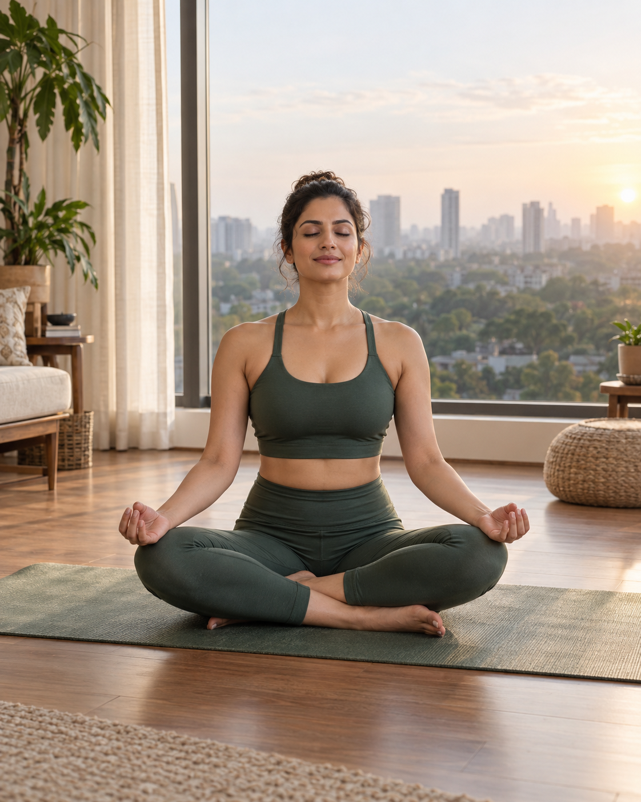
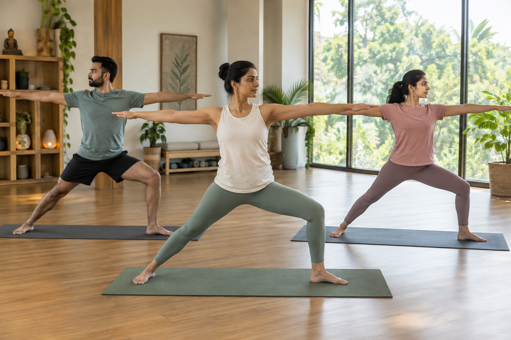

WELLBEING FOR THE WAY YOU LIVE
A fuller life.
A quieter mind.
Between work, family and the pace of the city, make a little room for yourself. Discover yoga, breathwork and meditation for a more active body, a calmer everyday, and a deeper connection within.

BEFORE WORK. AFTER WORK. JUST FOR YOU.
Make wellbeing part
of your everyday
A morning flow before your first meeting. A mindful pause between commitments. A gentler end to a full day. Find a practice that fits your life.
Ten minutes or half an hour. Make this time yours.
CONNECTION BEYOND THE SCREEN
Step out of the rush.
Into your practice.
Bring the focus of a thoughtful studio practice into your own space. Move with intention, return to your breath, and make wellbeing a regular part of your week.

MOVEMENT. BREATH. INNER CONNECTION.
Feel more connected to yourself
Explore the physical and reflective sides of yoga. A little movement, a conscious breath, a moment of gratitude—without needing to change who you are.
BUILD A RITUAL WORTH RETURNING TO
Your wellbeing deserves
a place in your diary.
Create space around your commitments with guided paths for mindful mornings, everyday movement, and quieter evenings.
A MORE INTENTIONAL EVERYDAY
Wellbeing beyond the mat
DEVYOG ACADEMY
Rooted in tradition.
Relevant to your life.
Get to know yoga beyond the postures. Explore breath awareness, meditation, and reflective ideas you can bring into work, relationships, and daily life.
A FEW THINGS YOU MAY BE WONDERING
A practice that fits.
A few answers.
Can I begin if I am new to yoga?
Yes. Explore the beginner-friendly practices and choose a pace that feels comfortable. Open each class to see its style, duration, and level.
Can I fit a practice around a busy workday?
The collection includes practices from 10 to 30 minutes. Start before work, take a pause between commitments, or make a quiet evening ritual at home.
Do I need to be religious to take part?
No. Explore yoga’s Indian roots through movement, breath, attention, and reflection. There is no prescribed belief; connect with what feels meaningful to you.
Are subscriptions and videos available?
This is the DevYog website preview. Member accounts, subscriptions, live bookings, and full video lessons are not connected yet.
YOU MAKE TIME FOR SO MUCH. MAKE SOME FOR YOU.